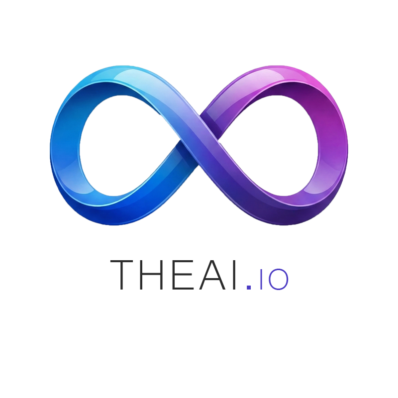

Monitoring · CVETHEAI.io
The comprehensive server monitoring and vulnerability platform. Monitor systems in real-time using multi-protocols (ICMP, TCP, HTTP/S, SSH) and an optional Go agent for deep metrics collection across multiple OSs. Features include advanced CVE correlation against OSV.dev (KEV, EPSS, CVSS), automatic Grafana dashboard provisioning, and a modern, responsive overview.
Go
Python
React
Docker